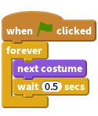
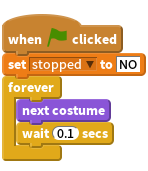
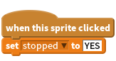
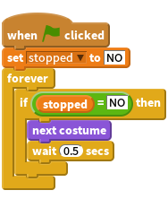
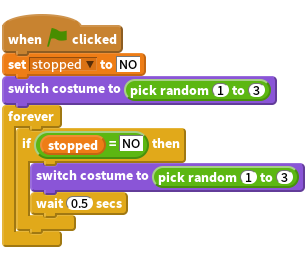
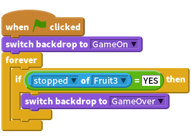
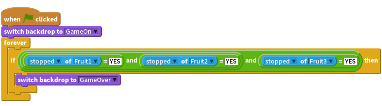

Introduction
This is a game that has three sprites that change costume. You have to stop them when they’re showing the same picture (like a fruit machine!).

Step 1: Create a sprite that changes costumes
Activity Checklist
Let’s import the different pictures for the game
- Start a new scratch project. Delete the cat by right clicking it and clicking Delete
- First of all let’s add a new Backdrop from the library. Choose the rays backdrop from the Other category and then delete the original blank stage.
- Now add a new sprite from the library.
- Choose an image from any folder. We used things/Bananas, but you can use any image you want to.
- Click on the blue ‘i’ next to the sprite’s picture in the Sprites window. Rename the sprite to ‘Fruit’.
- Now click the Costumes tab and import two more things so there are three costumes in total (we used things/apple and things/watermelon-a, but you can use any images you like).
Now we’ve got some costumes, we want the sprite to change between them.
Step 2: Making the picture change
Activity Checklist
- Click the
Scriptstab. - Click
Eventsand drag awhen flag clickedinto the scripts area. This will be triggered when we click the green flag. - Click the Control tab and add a
foreverand attach it so it snaps to the bottom. - Click the green flag in the top right. Notice that a yellow outline is around our script. It’s running because we clicked the green flag, which triggers this.
- Now click
Looksand drag in anext costume - How do we slow it down so it isn’t changing so quickly? Click the
Controltab and drag in await 1 secs Adjust the time until it’s repeating at a faster pace (a time of 0.5s looks good). What would happen if we didn’t have the
wait 1 secsblock?
Test Your Project
Click the green flag.
Do the costumes change at a sensible rate?
Save your project
Things to try
- Adjust the time in the
wait 1 secsblock. - What numbers do you think would make the game too easy, or too hard?
Step 3: Making it stop when we click on it
Activity Checklist
Great! We can make the sprite change costumes forever, but how do we make it stop when we click on it?
One way to do it is by using a variable to set the state of the Sprite. This will also be useful later…
- Create a new variable by clicking
DataandMake a variable. Call itstoppedand make it for only this sprite, then uncheck the box next to it so it doesn’t display on the stage. At the start of the game, the sprite won’t have been clicked so we’ll set the variable to be equal to “NO”.

Now we’ll set the variable
stoppedto “YES” when someone clicks on the sprite.
Finally we need to make the sprite stop changing costume when the variable
stoppedchanges to “YES”. Add anif...thenloop and use a new equals[] = []operator block (found under the Operators tab) to check ifstoppedis still “NO”.
Test Your Project
Click the green flag, wait for a moment, then click on the sprite.
- Does it change costume before you click on it?
- Does it stop when you do click on it?
- Start the program again. Does it stop when you put the mouse pointer on it, without clicking?
- Does the sprite stop when you click anywhere else on the Stage?
Save your project
Step 4: Creating the other sprite
Now we need to make the other sprites so we can play our game!
Activity Checklist
- Duplicate the sprite (Fruit) by right-clicking on it in the bottom right corner.
- Duplicate it again so there are 3 sprites on the screen.
- Move each sprite so they are in a line. Make them a bit smaller with if you need to.
Test Your Project
Click the green flag. All the sprites should change. Try to stop them all on the same picture by clicking on each one in turn!
Save your project
Step 5: Start each sprite with a random costume
Let’s make the sprites change to a random costume when the green flag is clicked.
When you start the game just after you’ve loaded it, all the sprites show the same costume and change in unison. It would make the game more interesting (and harder) if they changed in a less predictable way.
Activity Checklist
- If you look under the
costumestab for a sprite then you’ll see that each costume has a number. You can specify which costume a sprite is wearing using either its name or its number. - To make the sprite start with a random costume, let’s add a
switch costume toblock withpick random (1) to (3)to choose the costume number. We can also use exactly the same block in the
foreverloop so that the sprite switches to a different costume each time it changes during the game.
Do the same thing for each of your sprites.
Test Your Project
Click the green flag. All the sprites should change their costumes in an unpredictable sequence.
- How would we need to change our script if we added another costume?
Save your project
Things to try
Make the game harder
Change the difficulty of the game somehow. Just making the costumes change quicker is fairly easy. Can you come up with something more imaginative?
Some ideas you might like to try:
- Change the number of costumes each sprite has.
- Make some sprites have unique costumes.
- Have different times between costume changes.
Have fun coming up with your own things! Every time you make a change, think about whether it makes the game easier or harder. Is the game too easy or too hard? How can you adjust the difficulty so it’s just right?
Step 6: Display a message when the game has finished.
Let’s show the player a “Game Over” message when they’ve finished
Activity Checklist
First of all, let’s create a different Backdrop to display when the game has finished.
- Click on the stage and then the
Backdropstab. Change the name of the existing backdrop to “GameOn”. - Duplicate the backdrop and then add some text to the copy that says “Game Over”. You can change the size of the text by clicking on it and then dragging one of the corners. Rename this backdrop to be “GameOver”.
- Click on the
Scriptstab for the stage and set the “GameOn” backdrop to be the one displayed when the game is started. How can we detect when all the sprites have stopped? Remember we use the
stoppedvariable to record whether each sprite has been clicked? Let’s check thestoppedvariable for the Fruit3 sprite to see if the game is over. Select the Fruit3 sprite and then can use ax position of Fruit3block from theSensingtab, but change x position tostopped.
Test Your Project
Click the green flag. Does the “Game Over” message appear when you click on Fruit3?
What happens if you stop Fruit3 before you’ve clicked on both of the other fruit sprites? Let’s
modify our script so that it will work regardless of the order in which the sprites are stopped.
To check to see that all three fruit sprites have had their
stoppedvariables set to YES, we can use theand{ . blockgreen } operator. This is a compicated block that can be quite fiddly to assemble, so try and put it together one step at a time.
Test Your Project
Click the green flag. Does the “Game Over” message appear when you all 3 Fruits are stopped, regardless of the order you clicked on them?
Save your project
Step 7. Tell the player whether they’ve won or lost.
The aim of the game is to click on the sprites so they stop while showing the same costume. It would be nice to also display a message that told you whether you’d won or lost.
Activity Checklist
- We wrote the code to check that the game was over in step 6, so all we need to do now is check to see if the player has won. Go back to the backdrops and and add some more text to the GameOver backdrop so that also displays the word “WIN”. Then change its name to “Win”.
- Copy the backdrop again to create one with a “Lose” message. Give it the name “Lose”.
Now we need some code to work out which backdrop to display once the game is over. We can use an
if...then...elseblock to see if the player has won or lost by comparing eachcostume #(costume number) using a similarx position of Spriteblock like we did before. This time, instead of looking at thestoppedvariable, we can check thecostume #and see if Fruit1 has the same costume as Fruit2, and if Fruit2 has the same costume as Fruit3.![when FLAG clicked
switch backdrop to [GameOn v]
forever
if <<<([stopped v] of [Fruit1 v]) = [YES]> and <([stopped v] of [Fruit2 v]) = [YES]>> and <([stopped v] of [Fruit3 v]) = [YES]>> then
if <<([costume # v] of [Fruit1 v]) = ([costume # v] of [Fruit2 v])> and <([costume # v] of [Fruit2 v]) = ([costume # v] of [Fruit3 v])>> then
switch backdrop to [Win v]
else
switch backdrop to [Lose v]](4834b48ea241014b7a0efe3151eb38ab9639331b.png)
Test Your Project
Click the green flag. Does the correct message appear when the game has finished? What will happen if each sprite’s costume numbers don’t match (for example, if Fruit2’s costume number 3 is an apple and Fruit3’s costume number 3 is a melon)?
Save your project
Well done you’ve finished the basic game. There are more things you can do to your game though. Have a go at this challenge!
Challenge: Make the game get harder and easier over time
Different people will have different skills at playing the game. How could you make the game adjust its difficulty depending on the player?
One way you could do it is to adjust the speed the costumes change at. You can use a variable, called delay, to give the duration of each sprite’s wait block. If the player wins the round, the delay can be reduced a little (to make the game harder). If the player loses the round, the delay can be increased a little (to make the game easier).
You’ll probably need to think about using a different way of starting the game each time it is played instead of the when flag clicked Then you can store values in variables that are remembered between each round of the game.
Save your project
Well done, you’ve finished! Now you can enjoy your game!
Don’t forget you can share your game with all your friends and family by clicking on Share on the menu bar!